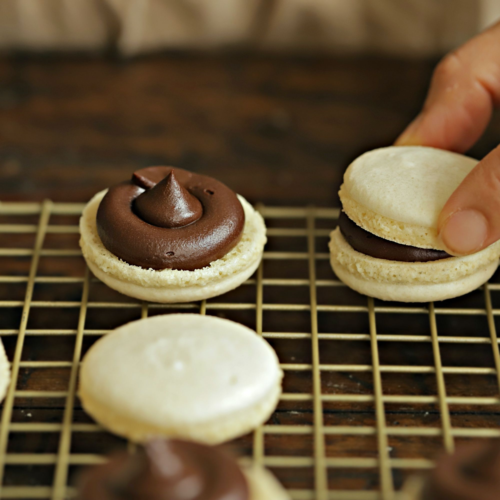

비건 마카롱
달걀을 넣지 않고 병아리 콩물을 넣어 만든 비건식 마카롱이예요. 병아리콩을 삶은 물은 아쿠아파바라고 하며 달걀 흰자를 대신하는 훌륭한 재료가 된답니다.

기본 재료 : 20개 기준
- 병아리콩 콩물 180g
- 황설탕 75g
- 아몬드 가루 150g
- 슈가파우더 150g
- 주석산(생략가능) 1g
- 아몬드 밀크 100g
- 다크 초콜렛 180g
조리 과정
- 1. 병아리콩 병/캔에서 병아리콩을 건져낸 콩물 180g을 냄비에 끓여서 100g으로 맞춰주세요.(tip. 병아리콩, 렌틸콩 등을 삶고 난 콩물을 아쿠아파바라고하며, 달걀흰자의 역할을 대신해요)(tip.냉장고에서 차갑게 식힌 후 사용해 주세요)
- 2. 볼에 콩물과 주석산을 넣고 핸드믹서로 섞다가 거품이 올라오면 황설탕 ⅓을 넣고 5분간 고속 휘핑해 머랭을 만들어주세요.
- 3. 남은 황설탕은 두 차례에 나눠서 5분간 고속 휘핑해 머랭을 만들어주세요.(tip. 뾰족한 뿔이 생길 때까지 계속 휘핑해 주세요)
- 4. 아몬드 가루와 슈가파우더는 함께 체 쳐서 준비해 주세요.
- 5. 완성된 머랭에 아몬드가루와 슈가파우더를 넣고 덩어리가 없이 부드러울 때까지 섞고 원형 깍지를 끼운 짤 주머니에 담아주세요.
- 6. 반죽을 팬에 짜고 30분간 실온에서 말려주세요.(tip. 손에 묻어 나오지 않을 때까지 건조해 주세요)
- 7. 120도로 예열한 오븐에서 30분간 구운 후 오븐 안에서 15분간 그대로 둬주세요.(tip. 오븐의 성능에 따라 굽는 시간에 차이가 있을 수 있어요)
- 8. 식힘망에서 완전히 식혀주세요.
- 9. 아몬드 미르를 따뜻하게 끓여주세요. (70-80도)
- 10. 다크 초콜릿에 끓인 아몬드 밀크를 붓고 주걱으로 섞어 매끈하게 유화시켜주세요.(tip. 유화된 다크 초콜릿을 핸드믹서로 갈아주면 더욱 쫀쫀한 크림을 만들 수 있어요)
- 11. 크림을 냉장고에 넣고 5~10분 정도 식힌 후 27도의 온도가 되면 짤 주머니에 넣어주세요.
- 마카롱 꼬끄의 크기대로 짝을 맞춘 후 필링을 일정한 양으로 짜주세요. 필링 위에 꼬끄를 덮어 마카롱을 완성해 주세요.